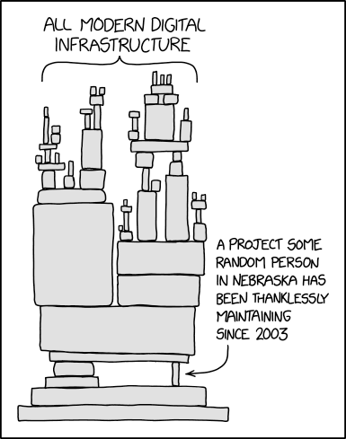

Danial
Khorasanizadeh
DevOps Engineer

Cybersecurity
Improving SaaS deployments
on Kubernetes
Both sessions reach the same server. The second illustrates an attacker gaining access through a compromised dependency loaded by the SSH server.
Inspired by the 2024 XZ Utils/liblzma backdoor attempt. SSH commands shown are illustrative. Original disclosure: Andres Freund, 29 March 2024.
Our platform for managing a SaaS ERP on Kubernetes
What “software supply chain” means
How we got here
Three questions for every artifact
SBoMs · SLSA · Image scanning · Runtime enforcement
Demo
Takeaways and the road ahead
The path from source to the software we run.
Ken Thompson, Turing Award lecture, 1984
Trust, in the end, is a judgment no tool can make for us.
But where does it fail?
The answer to “What does it contain?”
my-app:1.4.2 (the artifact, by digest)
├── openssl 3.0.2 included in
│ └── zlib 1.2.13 included in
├── pg-driver 3.3.2 built by a CI run
└── debian:12-slim contains (base image)
└── glibc 2.36 included in
The answer to “where did it come from?”
Supply-chain Levels for Software Artifacts
Same digest, updated vulnerability data
Artifact + evidence → policy decision
Generate an SBOM with Syft, scan it with Grype
Sign the image, attest SBOM and provenance with Cosign
Verify signature, signer identity, provenance
Kyverno admission policy, signed images only: watch it deny the unsigned one
github.com/dkhorasanizadeh/supply-chain-security-presentation
Inventory from the build: SBOM from CI, never by hand
Pin and lock: lockfiles committed, deps and images by digest, critical deps mirrored
Least privilege for the build: isolated builders, short-lived credentials, protected release branches
Sign at build, verify at deploy: signatures + provenance in the pipeline, policy checks at admission
Recheck on a schedule: re-scan deployed digests, keep the deployment record
People are links too: 2FA or hardware keys on registries, audit publishers, watch abandoned packages
How do we verify servers and processors we didn't build?
How do we verify software while it runs on someone else's cloud?
Questions?

github.com/dkhorasanizadeh/supply-chain-security-presentation